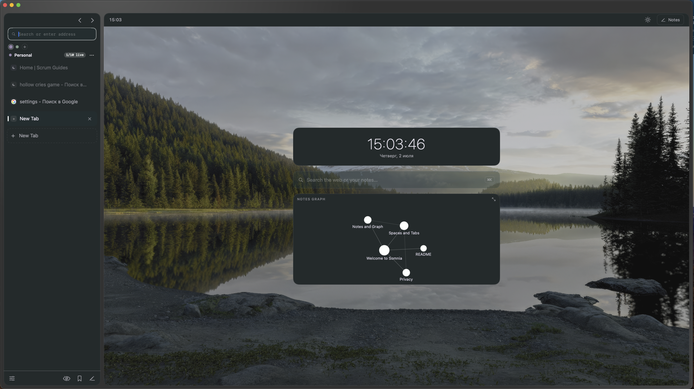
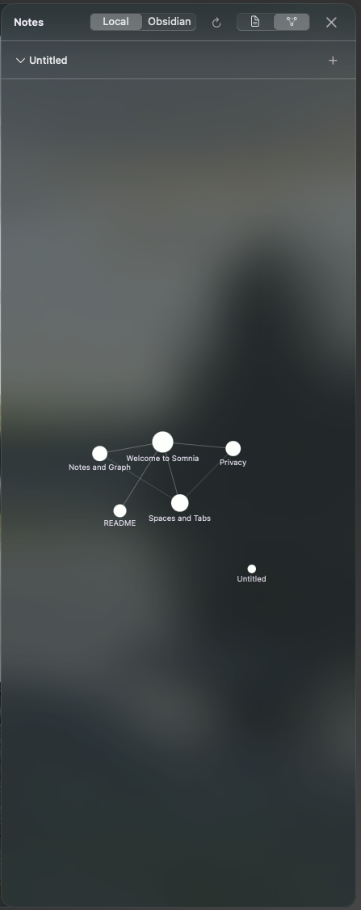
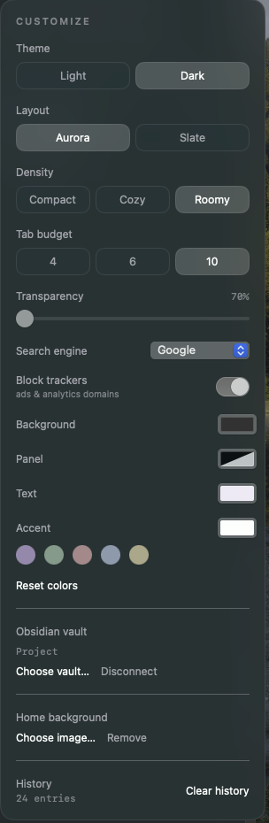

A native macOS browser fused with an Obsidian-style notes vault.
Browse on the left, keep linked markdown notes on the right — and see them as a graph.
macOS 14+ · ~2.6 MB binary · zero dependencies · MIT

Why
Other tools pick a side. Somnia is both.
Zen and Orion are browsers; Obsidian is notes. Somnia is one native app —
a browser whose second half is a real linked-notes vault with a connection graph.
If you research on the web and think in notes, the two live together instead of in separate windows.
Built with SwiftUI + WebKit — no Electron, no third-party dependencies.
Features
A quiet workspace, not a wall of buttons.
Browser ◗
Spaces — color-coded tab workspaces
Light on memory — lazy loading, tabs sleep on an LRU budget and release their web process
Reader Mode — a clean, themed reading view
Find on page, history, autocomplete, favicons, downloads manager
Notes ✳
Plain-markdown vault with [[wiki-links]] and automatic backlinks
Force-directed graph of your notes, mini-graph on the Home screen
Connect an external Obsidian vault (read-only)
Privacy ●
Tracker / ad blocking via a native content blocker
Private tabs — no history, no disk cache
Local-first — notes and history stay on your machine
In motion
Your notes, as a constellation.

the notes graph

customize — themes, accent, density
Keyboard first
Everything a shortcut away.
⌘Tnew tab⌘Kquick open⌘⇧Nprivate tab⌘⇧Rreader mode⌘Ffind on page⌘1–9jump to tab⌘[ ⌘]back / forward⌘,customize
Build from source
No Xcode project. Just swiftc.
# macOS 14+ · Xcode Command Line Tools only$ git clone https://github.com/Tequila-sunset671/somnia.git
$ cd somnia && ./build.sh
$ open Somnia.app
The prebuilt release is ad-hoc signed, so macOS will warn on first launch:
right-click → Open once. Or build it yourself — recommended, and it takes under a minute.